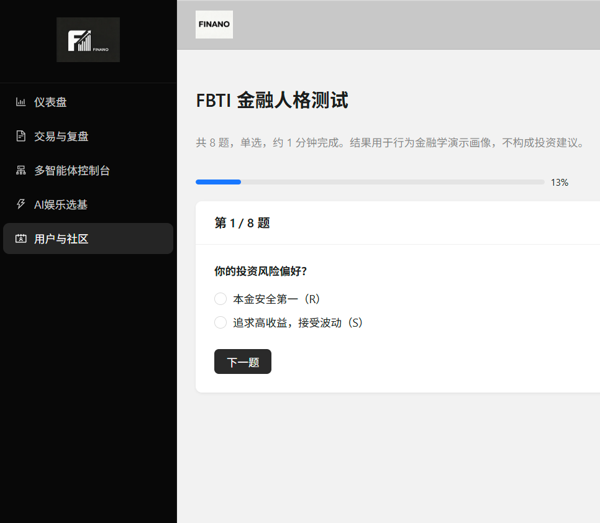
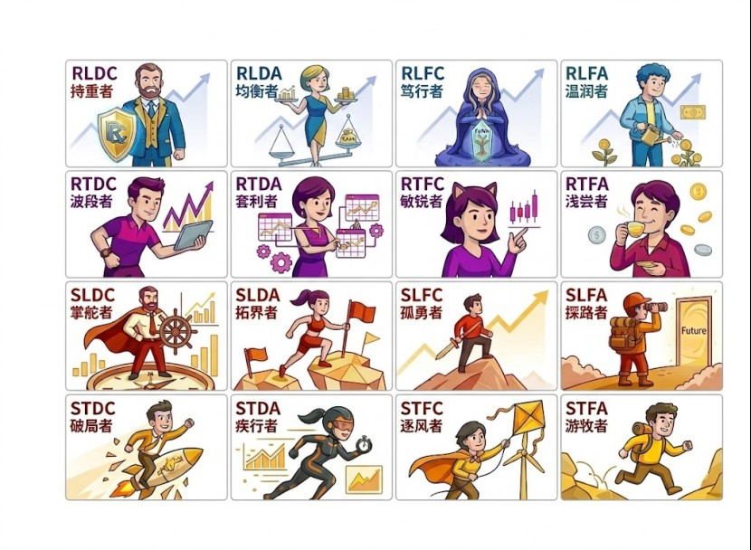
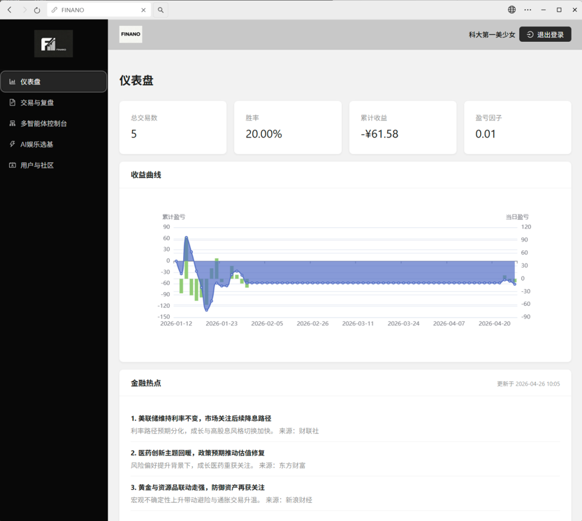
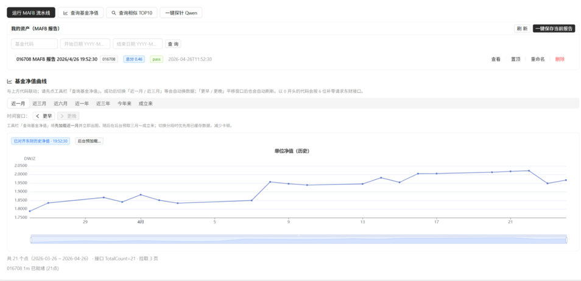
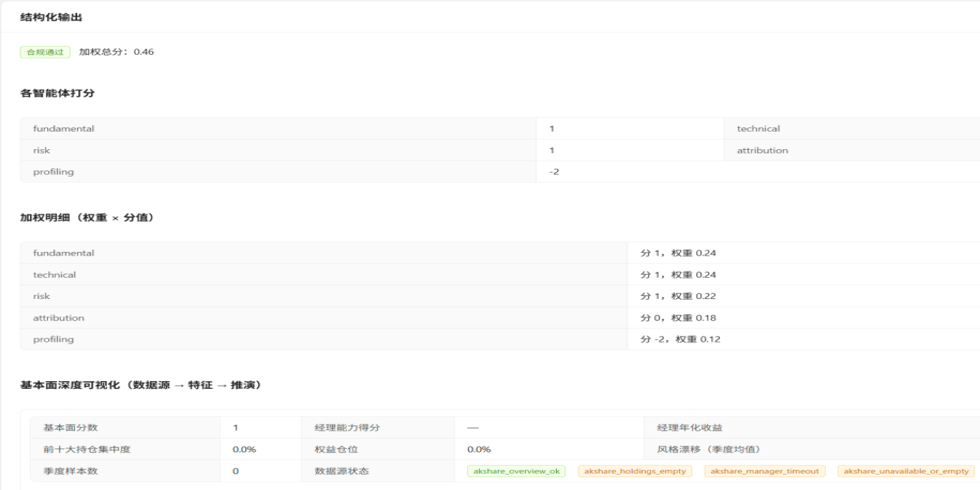
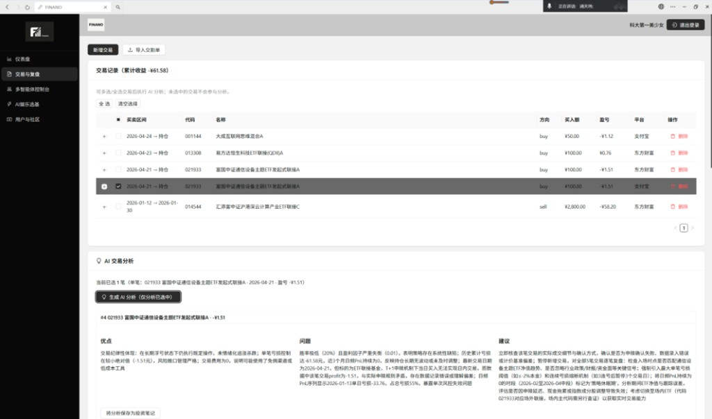
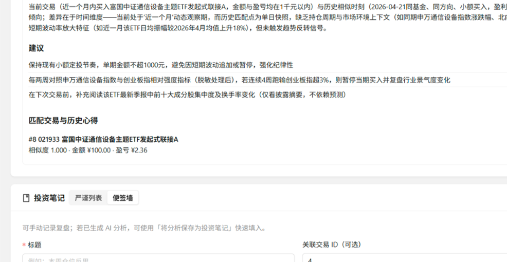
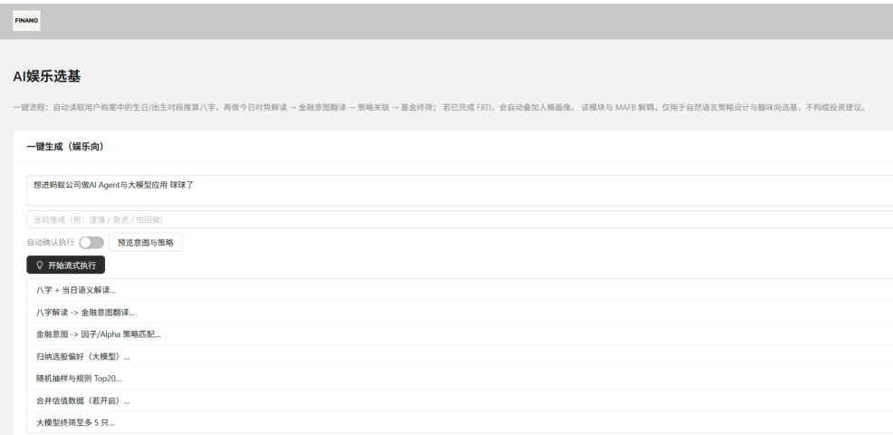
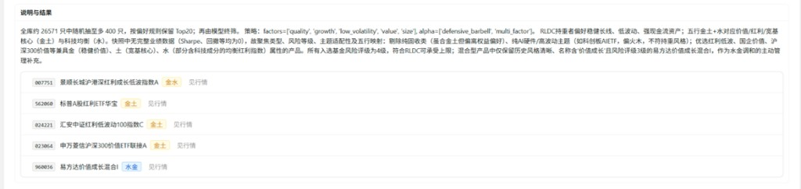

Elevator Pitch & Pain Points
One-line pitch, user pain points, value proposition, and product impact.
FINANO Concept Film
15-second brand concept opening.
Click or tap anywhere for sound
Behavioral Finance x Metaphysics x Multi-Agent AI
An LLM-powered wealth co-pilot combining FBTI financial personality, Bazi-driven emotional engagement, LangGraph multi-agent analysis, and bidirectional trade replay.
Table of Contents
One-line pitch, user pain points, value proposition, and product impact.
FBTI, MAFB, RAG Replay, AI Fund Selector, and product demos.
AI wealth management trends, Gen-Z market gaps, and competitive advantages.
4Ps, personality-card virality, channel strategy, and operating loop.
Pricing tiers, team equity, HKD 500K funding ask, revenue forecast, and break-even.
Lean Canvas, early adopters, business path, exit strategy, and Q&A.
Roadmap
Pain points, value proposition, and the blend of emotional value with professional analysis.
The technical moat across FBTI, MAFB, Replay, and AI Fund Selector.
AI wealth management growth, Gen-Z mindshare, and competitive differentiation.
4Ps, pricing tiers, viral FBTI cards, and the operating loop.
Equity split, HKD 500K ask, use of funds, revenue forecast, and break-even.
Business model, key metrics, acquisition path, and SaaS scaling route.
Part 1
Finano = MBTI + Metaphysics + Behavioral Finance x LLM Multi-Agent System.
Pain Point / Value / Impact
Investors struggle to translate historical lessons into present decisions, and rarely stay engaged with financial tools that lack a sense of companionship.
Behavioral finance captures real user preferences, metaphysical semantics provide emotional value, and AI agents execute professional analysis.
Shareable, explainable, and replayable interactions improve conversion, retention, and repeat usage among Gen-Z investors.
FBTI: Finance-Based Type Indicator

FBTI Personality Cards

Financial Personality Archive
RLDC Holder · RLDA Balancer · RLFC Devotee · RLFA Gentle
RTDC Swinger · RTDA Arbitrageur · RTFC Sharp · RTFA Dabbler
SLDC Captain · SLDA Pioneer · SLFC Lone Wolf · SLFA Pathfinder
STDC Breaker · STDA Sprinter · STFC Wind Chaser · STFA Nomad
Part 2
LangGraph 8-node state machine, 5-way parallel sub-agents, compliance interception, and strict JSON constraints.
MAFB: Multi-Agent Financial Console
MAFB Key Designs
Five agents share preheated data, avoiding separate quote, fundamental, and risk pulls while reducing database conflicts.
Each agent outputs only agent_name / score / reason, with score strictly constrained from -2 to +2.
data_not_ready is returned only when all core features are missing; model failures fall back to the rule engine.
weighted_total, scores, reasons, single_fund_analysis, technical_summary, risk_summary, compliance, disclaimer.
Five Sub-Agents
snapshot + fundamentals + news assist; metric_hints: concentration / drift / manager / scale / sharpe / drawdown.
weight 0.24nav_rows_for_technical, technical_retrieval, EMA / Bias / RSI / MACD; degrades when NAV data is insufficient.
weight 0.24risk_summary, rating, drawdown, volatility, VaR95, Sortino, liquidity, correlation, and risk_warning.
weight 0.22Prioritizes a rule engine, performance_style_attribution, excess return proxy, and return source decomposition.
weight 0.18The only agent allowed to reference user_profile JSON; inputs fund_data + user_profile + risk_level to judge profile fit / mismatch.
weight 0.12Compliance & Prompt Engineering
{
"agent_name": "risk",
"score": -2 to +2,
"reason": "1) Core conclusion\n2) Hard facts\n3) Logic\n4) Score tag"
}reason must include: 1) core conclusion, 2) at least two hard factual values, 3) logic chain, and 4) score tag.
Non-profiling agents are forbidden to mention user / profile / fit, preventing personality preference from contaminating fundamental and risk judgments.
Review 5-agent output -> Flag violations -> Trigger blocked branch -> Generate disclaimer.
Bidirectional Replay & Bazi Selection
After trade-curve features are written, cosine similarity is matched against same-user, same-fund history; hits route to history_compare.
Note vectors retrieve ReflectionEmbedding, FAISS is preferred, NumPy dot is the fallback, then trade_id / symbol / profit are reverse-looked up.
Birthday semantic parsing becomes a personalized prompt seed, while the core selection still relies on factor strategy, candidate-pool scoring, and LLM Top5 explanation.
Trade & Replay
New trades and notes automatically maintain vector features, and write failures do not block the main flow.
Two-Layer AI Analysis
POST /api/v1/ai/analyze/{trade_id}; impl: analyze_trade() in qwen_finance.py; key -> model call, no-key -> _local_analysis() rule engine.
Impl: _llm_replay_analysis(); inputs anonymized object, similar samples, and routing result; parses direct JSON or extracts a JSON block, with fixed-advice fallback on failure.
AI Fund Selector
Birthday, mood, and investment intent are parsed into intent / mapped_sectors / strategy_style.
Factor strategy bundles drive the Top20 candidate pool, with fallback at every stage.
/fbti-select/stream pushes stage-by-stage progress, increasing trust in the AI workflow.
System Demo / Dashboard

System Demo / MAFB Results


System Demo / RAG Retrieval


System Demo / AI Fund Select


Project Summary
GitHub: github.com/Sylvia2001vck/FINANO · Open source for educational demo only, not investment advice
Part 3
AI + wealth management is growing rapidly, but Gen-Z needs a more personalized and entertaining entry point.
Market Environment & Size
Competitive Advantage
Professional in asset allocation, but shallow in personality understanding, weak in interaction, and reliant on returns rather than relationships for retention.
FBTI virality, Bazi emotional value, a professional MAFB foundation, and a bidirectional replay moat.
Strong expression ability, but lacking financial data sources, compliance interception, investment history, and reusable analysis pipelines.
Part 4
Use FBTI cards as an acquisition flywheel and replay loops for long-term retention.
Marketing Mix: 4Ps
FBTI + MAFB + Replay + Fund Selector.
Standard free tier, Diamond at ¥39/month or ¥369/year, plus customized institutional API licensing.
Share personality cards and attract open-source communities to validate the architecture.
Identity labels such as 'I am an RLDC Holder' lower the sharing barrier.
Business Process
Assessment -> Analysis -> Execution -> Replay -> Optimization. Every interaction strengthens the user profile and improves replay quality.
Part 5
AI engineering, behavioral finance, full-stack development, and an ultra-low-cost structure create early advantages.
Pricing Model
¥0
¥39/mo · ¥369/yr
Custom annual license
Management Team
Founder, CEO & CTO
Visionary founder and core system architect. Orchestrates FINANO's long-term business trajectory while pioneering the proprietary LangGraph multi-agent framework. Fuses high-performance distributed engineering with end-to-end full-stack deployment and deep product integration.
Chief Data Officer · CDO
Data engineering powerhouse. Architect of FINANO's automated financial data synchronization engines and real-time analytical pipelines. Controls data integrity, risk modeling storage, and database optimizations to fuel the core multi-agent ecosystem.
Chief Strategy Officer · CSO
Chief strategic architect steering Finano's institutional capital roadmap and dual-track exit strategies (M&A/IPO). Spearheads financial structuring, market positioning, and cross-border resource allocation to bridge cutting-edge AI with Tier-1 financial institutions.
Chief Growth Officer · CGO
Growth & market monetization strategist. Drives Finano's market penetration through deep-tier industrial intelligence and user acquisition scaling. Translates complex fintech dynamics into actionable growth vectors to capture high-yield market shares and expand brand equity.
Chief Marketing Officer · CMO
Mastermind of market mechanics and business process architecture. Structures FINANO's strategic 4P/4C marketing matrix and end-to-end service delivery workflows. Engineers adaptive, contingency-driven plans to safeguard market positioning against macro shifts.
Chief Operating Officer · COO
Operational strategist and master BP architect. Orchestrates FINANO's comprehensive business blue-printing, commercial modeling, and cross-functional operational scaling. Bridges corporate vision with disciplined execution vectors to maximize organizational efficiency.
Six-member C-suite: Sylvia (Founder/CEO/CTO), Wang Xinyi (CDO), Zack (CSO), Jiang Haoyu (CGO), Wu Xinze (CMO), Zhao Junyi (COO).
Equity Structure
Sylvia holds 100% control as founder. The six-person C-suite covers technology, data, strategy, growth, marketing, and operations; the 40% incentive pool remains reserved for future core hires.
Funding Ask & Use of Funds
Implied pre-money valuation: HKD 5.0M. Funds deploy over 12 months across compliance, acquisition, and compute reserves.
Financial Plan & Initial Capital
Post-funding scale: at 10,000 users with 3% Diamond conversion, monthly subscription revenue reaches ~¥11,700; two B2B API licenses at ¥2,000/month each push total recurring revenue above ¥15,700/month, covering scaled compute and ops.
Revenue Forecast
Part 6
FINANO is 16Personalities meets Wealthfront, Spotify Discover Weekly for mutual funds.
Lean Canvas Summary
Generic advice lacks behavioral personalization; traders struggle to connect historical market contexts with current decisions; financial tools feel clinical and boring.
FBTI & Bazi Profiling, Bazi-Infused AI Fund Selection, Bidirectional Replay.
Behavioral finance + traditional metaphysics + multi-agent AI deliver hyper-personalized, interactive fund selection and strategy replay.
16-type FBTI, Bazi routing, strict JSON prompts, and a LangGraph 8-node parallel compliance pipeline.
Retail investors, investment-journal users, and Gen-Z users attracted by MBTI + metaphysics.
Assessment completion, share rate, pipeline success, replay retention, and subscription conversion.
Lean Canvas Details
Traditional robo-advisors, manual trading journals/spreadsheets, and entertainment fortune-telling apps all lack the combination of real financial data + LLM agents + personalized replay.
16Personalities meets Wealthfront; Spotify Discover Weekly for mutual funds; GitHub Copilot for retail trading.
GitHub & open-source communities, social-media FBTI card virality, finance/quant student communities, and API licensing to wealth-content communities.
AI-finance metaphysics enthusiasts, quant finance students, open-source developers, and Gen-Z investors who love MBTI and investment journaling.
Retail investors seeking data-driven personalization, tech-savvy traders maintaining investment journals, and young users looking for an entertaining entry point.
An AI financial lifecycle co-pilot combining FBTI, Bazi, LangGraph multi-agent orchestration, and bidirectional RAG replay.
Exit Strategy
Compliance-ready MAFB pipeline, FBTI viral acquisition, and compute reserves convert capital into defensible product velocity and broker-ready modules within 12 months.
Platforms such as Futu and Tiger need Finano's FBTI virality and metaphysical wealth modules to activate Gen-Z retail traffic.
Long-term commercialization through a high-retention financial traffic entry point, API licensing, and subscription revenue.
Q&A
We are not replacing science with metaphysics. We use metaphysics to provide emotional value, while multi-agent systems execute scientific quantification.
In our system, birthday/Bazi is essentially a personalized prompt seed. The frontend presents fortune-style companionship that matches user expectations, while the underlying Fundamental Agent and Risk Agent still use serious quantitative factors such as fund financial reports, max drawdown, and Sharpe ratio.
Metaphysics solves acquisition and stickiness; AI agents safeguard professionalism and risk control. That is Finano's business moat.
Q&A
The high call volume during development mainly came from Cursor advanced agents performing architecture refactoring and frontend-backend integration. This is a one-time R&D investment.
After launch, each request will be cache-optimized and routed to cost-efficient model APIs. The token cost of a single 5-way parallel multi-agent request can be compressed to roughly ¥0.05-¥0.10.
With elastic extra-credit packages, heavy users pay for additional usage themselves, creating a SaaS model where fixed costs are locked and variable costs are shared by paying users.